`WebGPURenderer` can replace the shaded image with a diagnostic. Set `renderer.debug.view` to one of the names below. `WebGLRenderer` does not support these views. The WebGL 2 backend of `WebGPURenderer` does.
import * as THREE from 'three/webgpu'; const renderer = new THREE.WebGPURenderer(); renderer.debug.view = 'shaderComplexity'; renderer.debug.view = 'bufferVisualization'; renderer.debug.buffer = 'worldNormal'; renderer.debug.view = 'none';
The WebGPU inspector has the same list under Settings. The pictures on this page are the complexity example, one scene with every view turned on in turn.
Back row, left to right: a basic material, a standard material, a physical material with transmission, stacks of transparent layers, and a pad under four point lights. Middle row: color, roughness, metal, emissive, a normal map, and ambient occlusion. Front: an open box, separate meshes, and one instanced mesh.
Gives each submitted draw its own diffuse color, then lights that color. Shadows stay visible. Unlit materials stay flat. An instanced mesh is one draw, so every instance shares a color. Separate meshes get different colors even when they share a material. A multi-material group is its own draw.
Use it to see how a cluster is batched. In the picture, the six separate boxes on the right are six colors, and the instanced boxes beside them are one color.
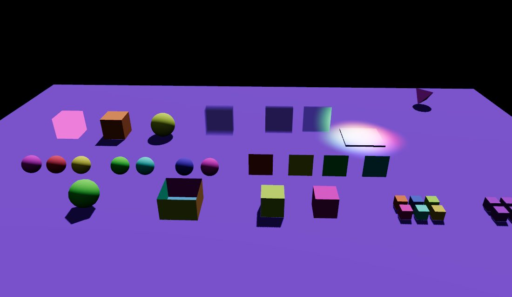
Estimates how expensive each material is to shade, then colors that cost. The estimate is a stand-in for a GPU instruction count, which the browser does not report. It grows with the lighting model (unlit, Lambert, Phong, standard, then physical features such as transmission) and with each fragment texture sample.
Overlapping surfaces add. A stack of transparent cards costs more than one card of the same material. The background is left empty, so it stays on the cheapest stop.
The ramp runs from green, through yellow and red, to white. White means the accumulated cost has reached `renderer.debug.shaderComplexityBudget` (default `800`). A plain standard material already sits in the red band at that budget, which is why the floor in the picture is red. Raise the budget when a whole scene collapses into one color and you still need to tell materials apart.
Use it when a frame is slow and you need to see which materials are heavy, or where transparent layers stack that cost up.
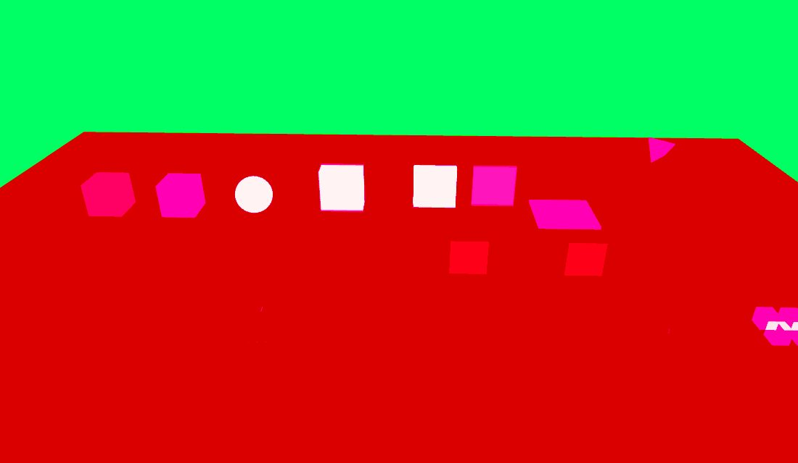
Colors each pixel by how many direct lights shade it. A light counts only where its attenuation is still in range. A directional light counts everywhere. A shadow-casting light that the object receives counts as one and a half, even in the shadowed part. The front-most surface wins, so transparent layers do not add.
The ramp starts at black for no lights, then blue, green, yellow, red, and white. White is about ten lights. In the picture the floor is blue because of the sun, and the pad on the right turns yellow where the four point lights overlap.
Use it to find pixels touched by too many lights, and to check that a light's radius is as small as you think.
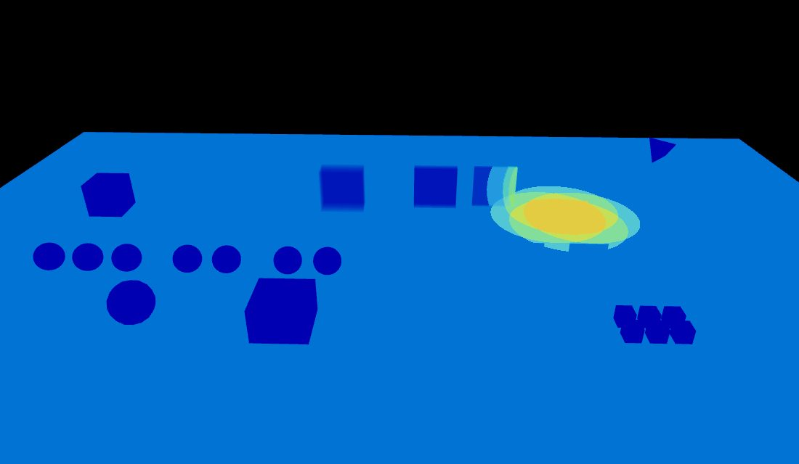
Colors each mesh by whether it casts shadows. A caster is green. A mesh that does not cast is gray. The color is lit, so form and shadows stay readable.
Use it to find a mesh that should cast and does not, or one that casts and should not.
The two boxes in the picture share a material. Only the left one has castShadow set.
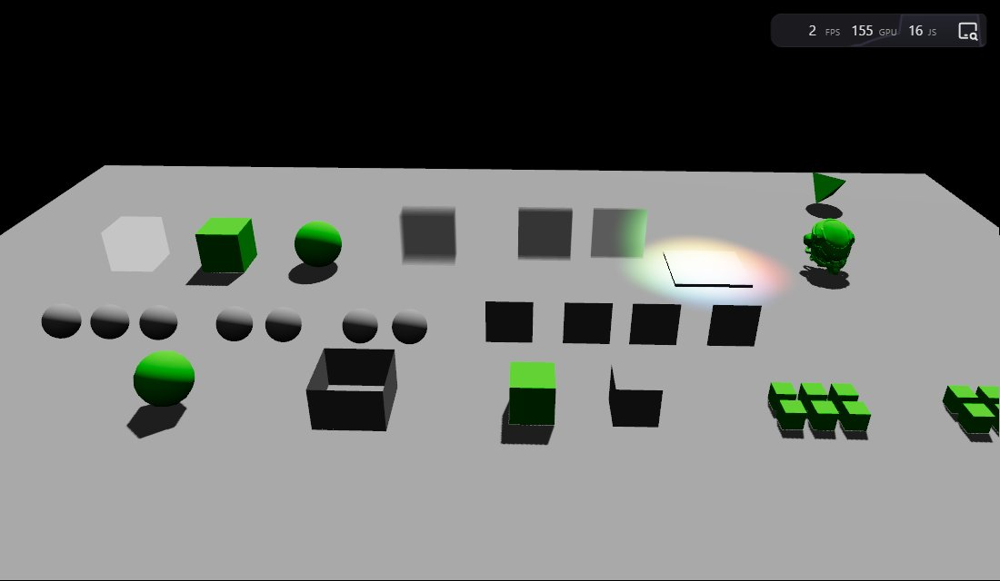
Gray is a single-sided material, or the front of a double-sided one. Blue is a double-sided back face you can see, so that material needs both sides. Red is a double-sided back face hidden behind the front. It is drawn on the outside, over the gray. A single-sided material would look the same there.
A closed double-sided box goes red from the outside. The single-sided box beside it stays gray. A card stays gray from the front and turns blue from the back.
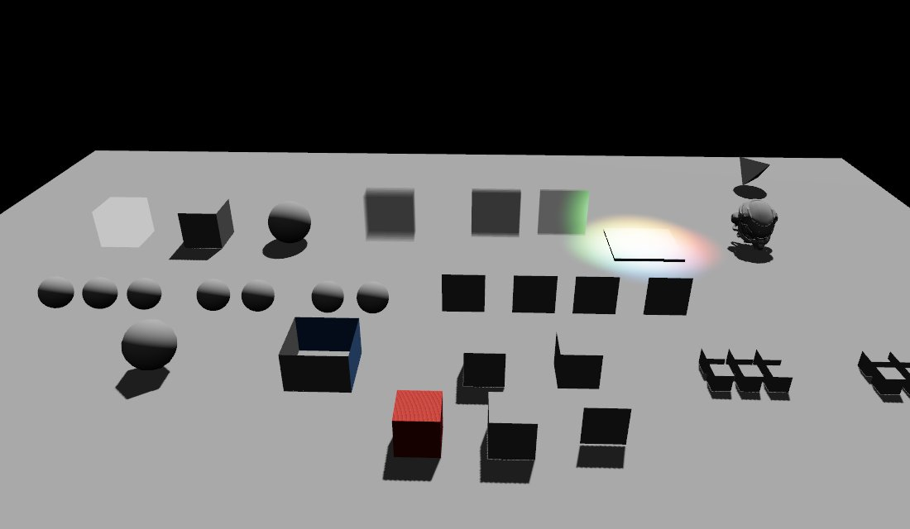
Counts how many fragments shaded each pixel. Every fragment that passes the depth test adds one. This is the portable stand-in for a GPU quad-occupancy count. The browser cannot see wasted lanes inside a 2×2 quad.
The ramp is a stair from black, through blue and green, to white. White means the count has reached `renderer.debug.quadOverdrawBudget` (default `10`).
Use it to find stacked transparent cards, particles, or UI that shade the same pixel many times. A single opaque surface stays on the first stop.
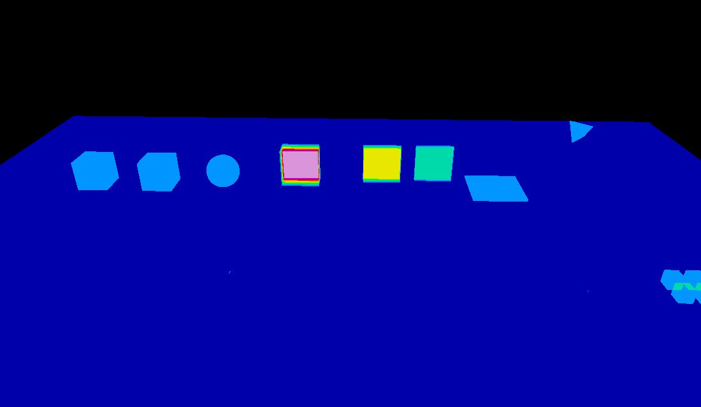
Multiplies the shader-complexity cost by the number of fragments that shaded the pixel, then uses the shader-complexity ramp. One opaque surface matches shader complexity. Each extra overlapping fragment scales that cost, so a cheap material drawn many times can still go white.
`renderer.debug.shaderComplexityBudget` scales this view as well.
Use it when shader complexity looks fine but the frame is still fill-rate bound. The two Lambert cards in the example stay on the ramp in shader complexity and jump toward white here, because the same pixels are shaded twice.
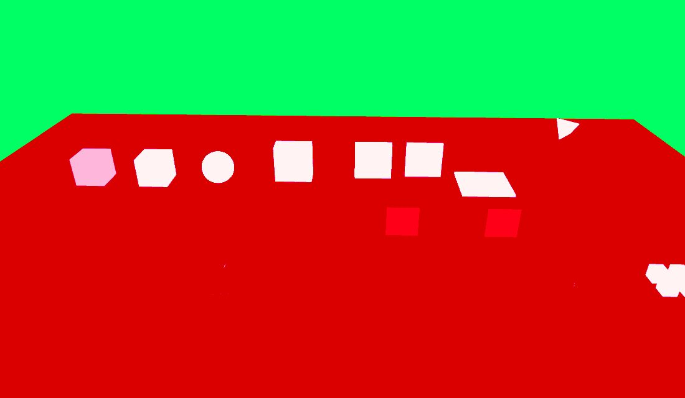
Replaces every lit material with the same flat gray (`0.3`), fully rough, with no specular. Normal maps, ambient occlusion, emissive, clearcoat, and transmission are dropped, and the geometric normal is used. Unlit materials become flat gray with no lights.
Use it to judge light placement, brightness, and shadows when albedo and material detail are hiding them.
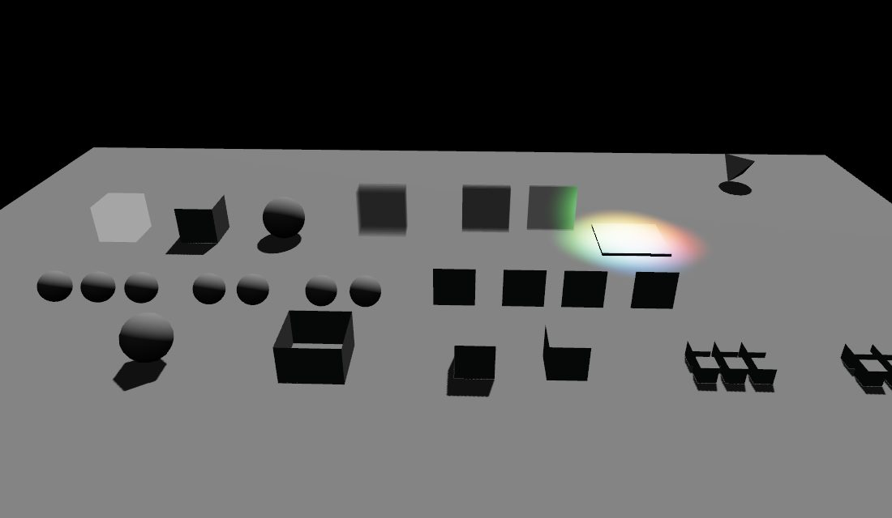
Also replaces albedo with flat gray (`0.3`), and forces specular to `0.1`. Normal maps, roughness, ambient occlusion, emissive, clearcoat, and transmission stay. The gray removes color so surface detail is easier to read.
Use it when a normal map or a roughness change is hard to see on a busy albedo. Switch to lighting only if you want those details gone and only the lights left.
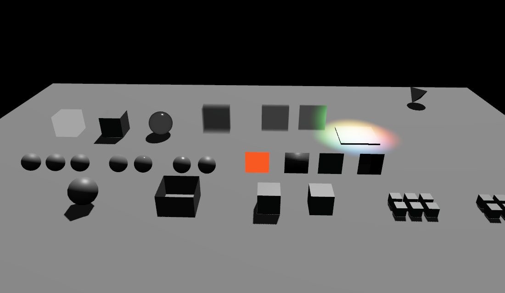
Draws both sides of each triangle. The side whose winding faces the camera is a warm gray. The opposite winding is blue. Depth still hides a face that sits behind another surface.
Use it to see a flipped normal on the outside of a mesh, or the reverse side of a thin double-sided surface. The inside of a closed mesh stays hidden. The open box in the picture is double sided, so the inner wall is blue.
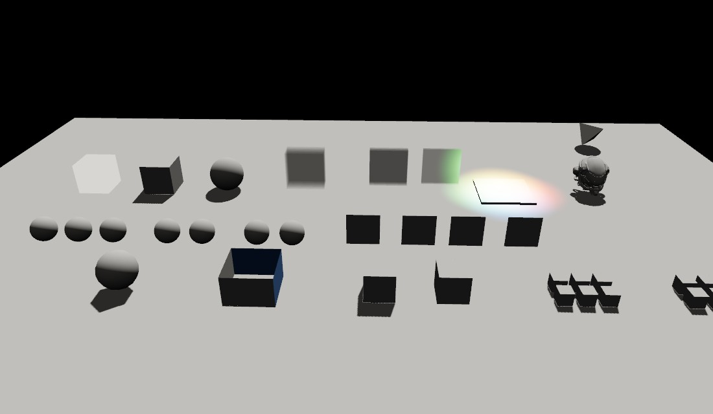
Draws one material channel instead of the lit color. The visible surface wins, and tone mapping is off. Set `renderer.debug.view` to `'bufferVisualization'` and pick the channel with `renderer.debug.buffer`.
Use these when a surface looks wrong and you need to see the input to lighting, not the lit result.
Albedo before lighting, including maps and vertex colors. Use it to check that a color map is assigned and is not being hidden by the light.
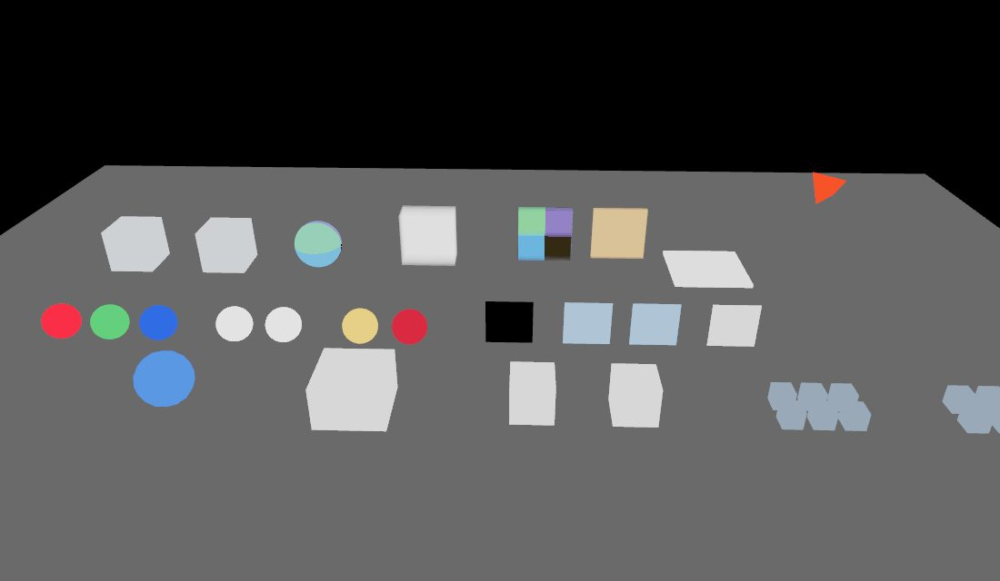
The shading normal in world space, stored as `normal * 0.5 + 0.5`. Up is green, and a normal map shows up as extra color on an otherwise flat face. Use it to check normal-map direction and strength.
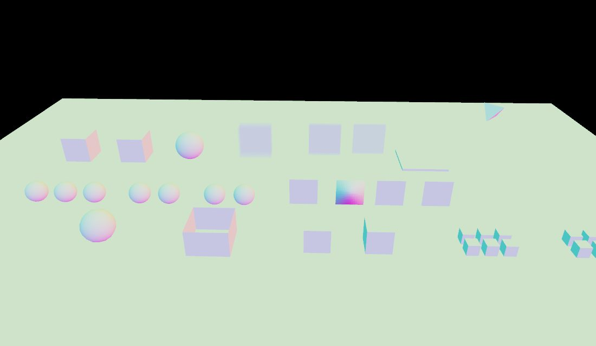
The roughness the lighting model uses. Black is smooth, white is rough. Use it to check a roughness map and whether a surface is smoother than it looks under the current lights.
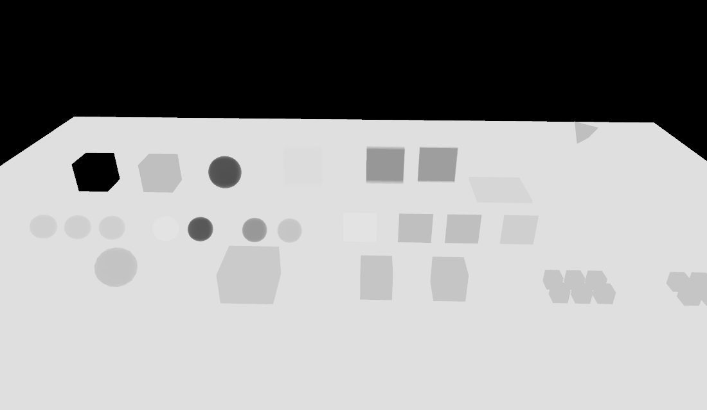
Metalness. White is metal, black is dielectric. A material that never sets metalness stays black. Use it to check that a metalness map is connected and is not inverted.
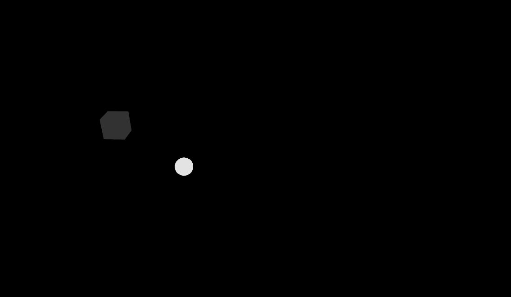
The material's ambient-occlusion map. White means no extra occlusion. A material without an occlusion map stays white. Use it to see whether the occlusion map is sampled, and how strong it is, without the rest of the lighting.
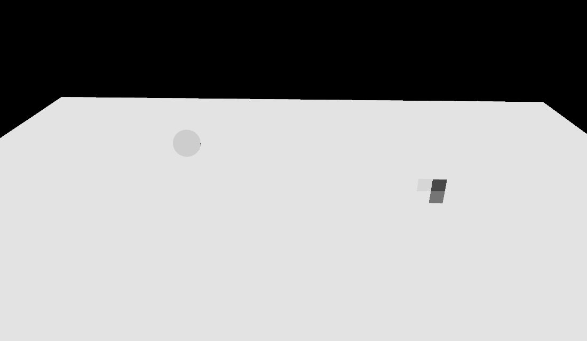
Emissive color before it is added to the lit result. Black means the material has no emissive. Use it to check an emissive map on its own. Lighting is not added on top.
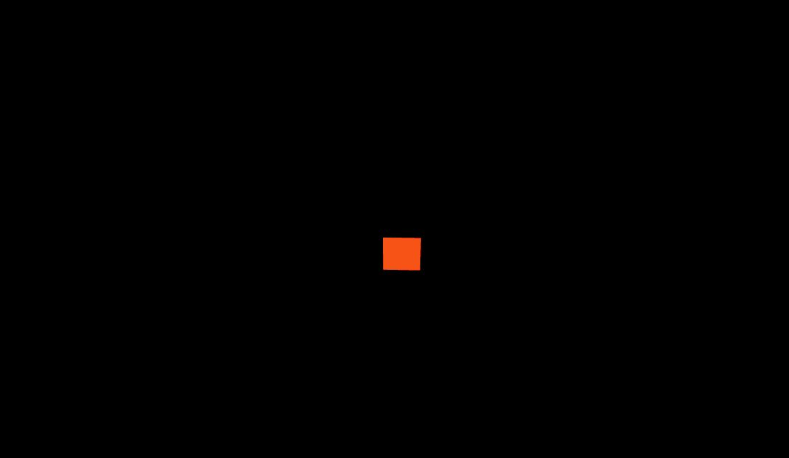